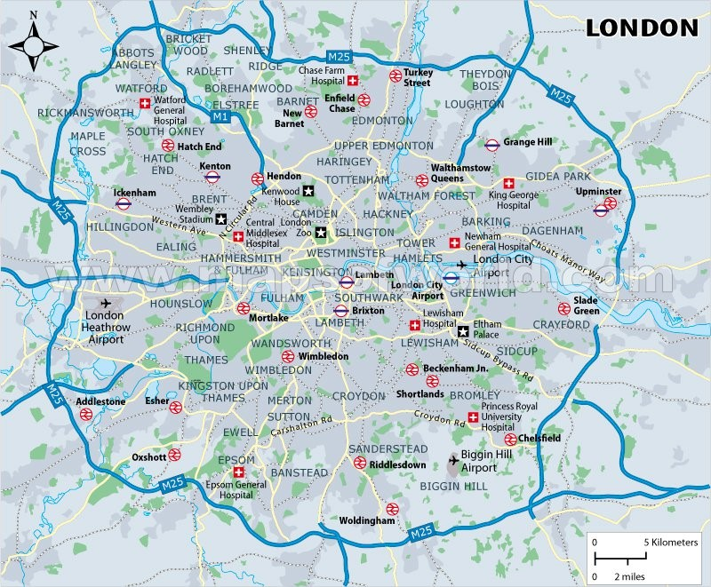
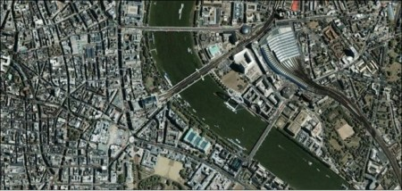

a)
Официальный сайт города
b)
Дополнительные информационные ресурсы, посвященные городу:
Четыре основных аэропорта Лондона
Куда пойти с детьми
Лучшие отели Лондона для любого бюджета
30 главных достопримечательностей города:
Район Сити в Лондоне
Рестораны и кафе
Досуг
c)
Общие сведения о городе:
ЛОНДОН – столица Соединенного Королевства Великобритании и Северной Ирландии и крупнейший город на Британских островах. Расположен на р.Темзе, в 64км от ее устья. Лондон - один из крупных портов Британии и главный промышленный центр страны. Площадь города составляет 1560 кв.км., население Лондона немногим более 7 млн. человек. История Лондона насчитывает более 2000 лет. Город пережил взлеты и падения, пожары и эпидемии, был столицей самой могущественной империи мира. Очень интересны многие лондонские традиции, уходящие своими корнями в глубокую старину. Лондон играет ведущую роль в политической и культурной жизни Великобритании. В нем находятся парламент, правительство и высшие органы правосудия. Как культурный центр Лондон
приобрел известность своими музеями и художественными галереями, театрами и музыкальной жизнью. Город известен также многочисленными старинными церквями, в которых хранятся национальные святыни английского народа. Лондон - средоточие международной деловой жизни и узел международных авиалиний. Финансы и торговля играют важнейшую роль в экономике Лондона. Население Большой Лондон состоит из Сити и окружающих его 32 крупных городских административных районов. Лондонский регион имеет самую высокую на Британских островах плотность населения. В самом Сити проживает не более 10 тыс. жителей (их численность ежедневно значительно возрастает за счет тех, кто приезжает на работу из пригородов), в Большом Лондоне - более 7 млн. жителей, в Лондонской городской агломерации - ок. 11 млн., а в Юго-Восточном регионе, где доминирует Лондон, - около 17 млн. В течение последнего столетия в Лондоне нашли пристанище представители самых разных национальностей. Крупнейшей и старейшей группой иммигрантов являются ирландцы.
d)
Карта города/фото города со спутника:

